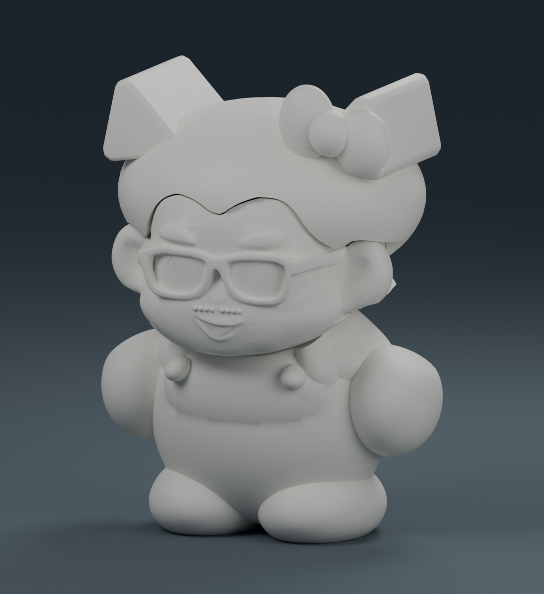

貓耳帽裡的小陳晉・單色一體成型

單一連通實體，整件一次印出，不需組裝。此檔只有一種線材；若要商品示意配色需自行上色。
約 10 公分高，範例列印時間約 6 小時 46 分，耗材約 94.94 g。
內部接點已連成一個封閉實體。表面仍保留造型細節與原接縫線；不需要另外黏合頭、臉與身體。
以 Bambu Studio 專案開啟，保留已排好的方向。範例：X1 Carbon／0.4 mm／PLA／0.16 mm 層高，含支撐與底邊，無中途換色、無擦料塔。
列印後拆除支撐、清理表面。已通過單一實體、封閉性與切片檢查；尚未實體試印。
下載單色一體成型 3MF